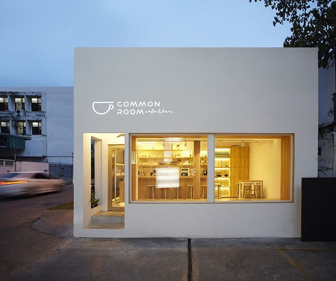

CONTENT
-
제주도 여행
섬 전체가 하나의 거대한 관광자원인 제주도. 에메랄드빛 물빛이 인상적인 협재 해수욕장은 제주 대표 여행지며, 파도가 넘보는 주상절리와 바다 위 산책로인 용머리 해안은 제주에서만 볼 수 있는 천혜의 자연경관으로 손꼽힌다. 드라마 촬영지로 알려진 섭지코스는 꾸준한 사랑을 받고 있으며 한라봉과 흑돼지, 은갈치 등은 제주를 대표하는 음식이다. -

가볼 만한 곳
👉클릭! -용두암해안도로: 제주공항에서 차량으로 5분거리에 위치한곳으로 제주시 해안도로중 해안절경이 아름답고 예쁜 카페가 많은곳으로 여행객분들이 많이 찾는곳입니다.
-협재해변/협재해수욕장: 조개껍질가루가 많이 섞인 백사장과 앞 바다에 떠 있는 비양도, 코발트 빛깔의 아름다운 바다와 울창한 소나무숲이 한데 어우러진 풍광이 매우 아름답다.